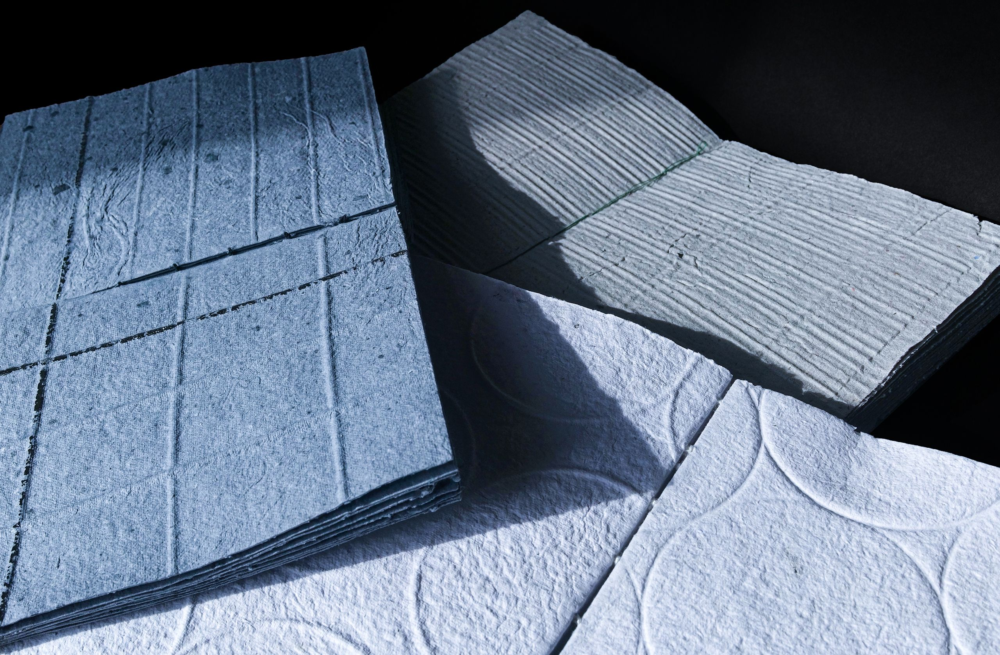
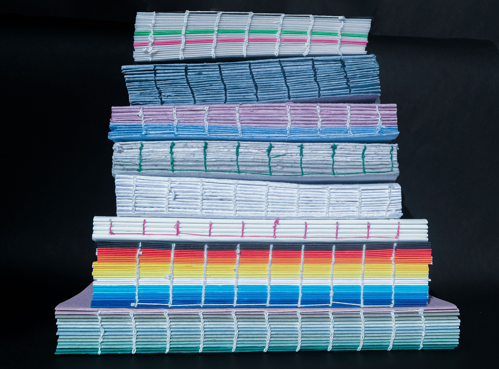
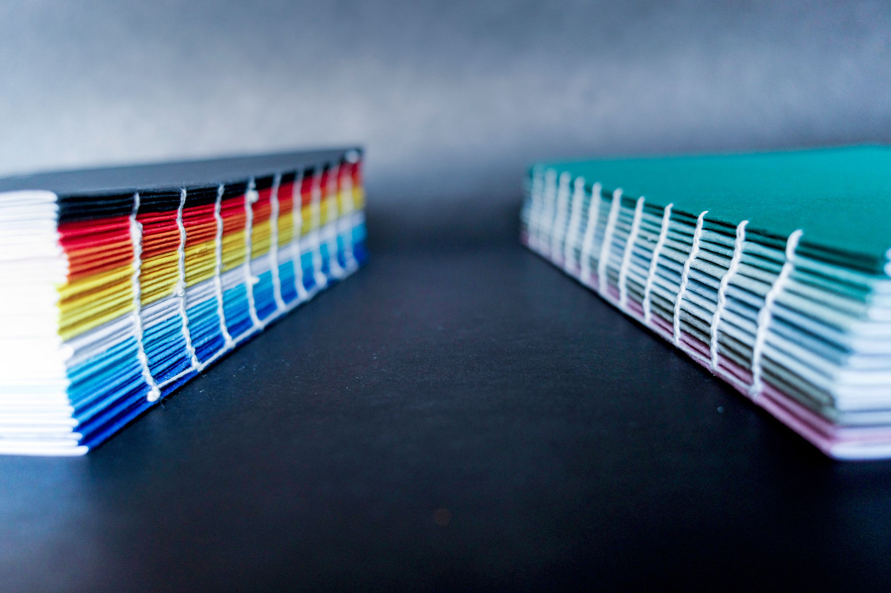
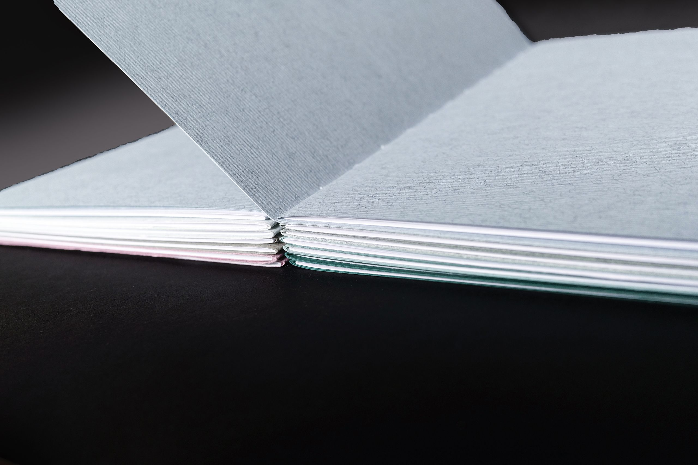
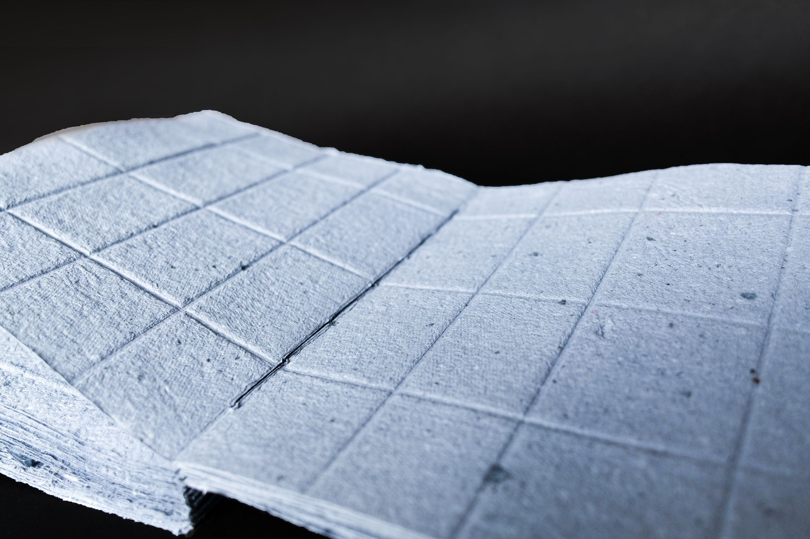
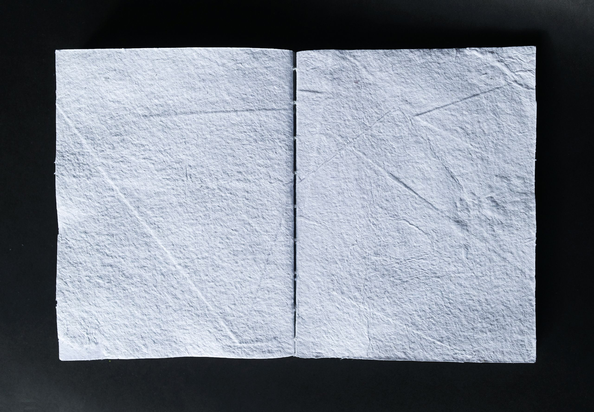
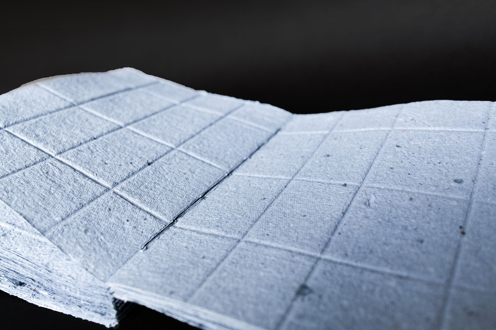
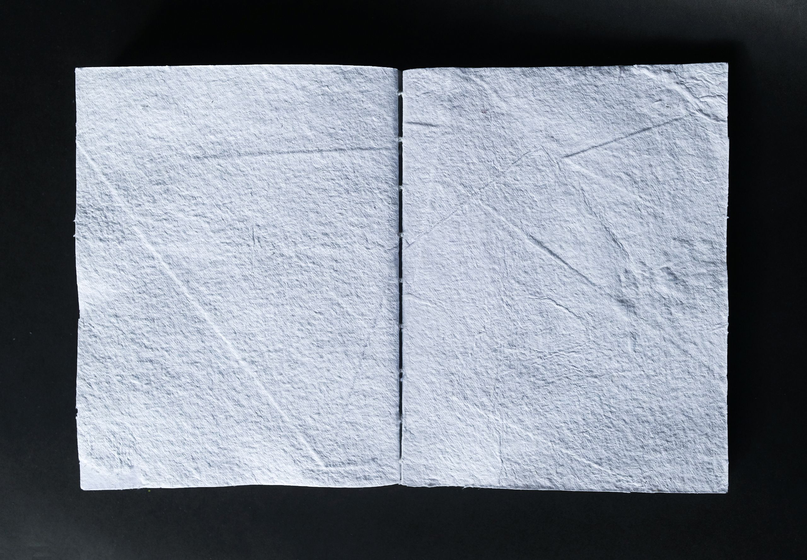

CARNET
Depuis le début de mes études, le choix du papier pour la réalisation de mes projets est primordial. Il est un élément de composition graphique en soi et permet d’affirmer des choix (papier éco-responsable, papier à grain, pliage, etc...). Durant cette année de césure, j’ai pu expérimenter la fabrication de papier recyclé de différentes teintes, textures, et technique d’embossage. L’idée par la suite était d’obtenir des objets sous forme de carnet d’expérimentation où le papier n’est pas vierge ni imprimer. Pour ce faire, j’ai opté pour l’apprentissage d’une reliure que je n’avais jamais pratiqué, mais que j’affectionne particulièrement, la reliure copte. Cette technique de reliure cousue permet à la fois de bien maintenir les différents carnets composant l’objet final, mais aussi d’ouvrir les pages en grand afin de pouvoir observer le contenue de ces dernières. Voici quelques exemples des résultats obtenue dans cette recherche personnelle en collaboration avec Camille Vernhes-Chazeau.
    


